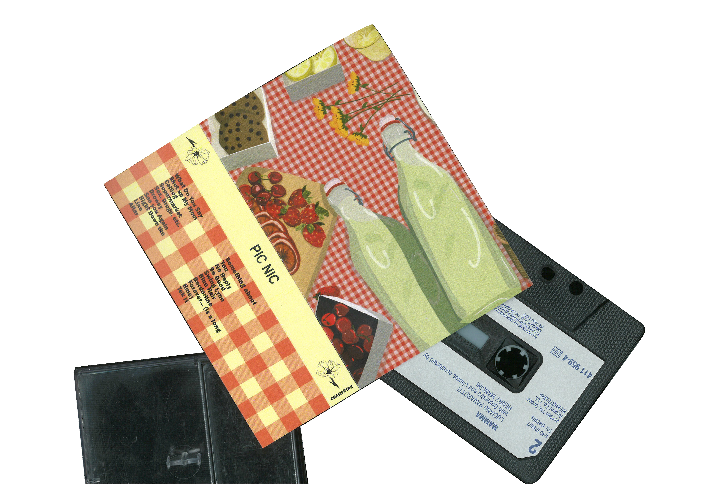
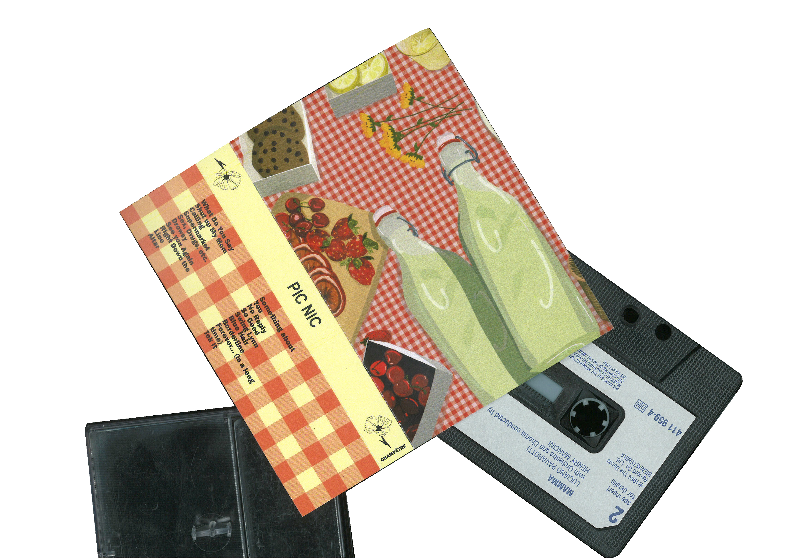

DESIGN CASSETTE
Réalisation d’un design pour une cassette de musique mit en relation avec le thème
du «Pique Nique». Il à été question de réalisé une playlist avec des musiques
qui pourrait passer lors d’un pique nique mais aussi le ressenti de l’été.
Mise en avant du motif Vichy, de couleur pastel et d’élément reconnaissable.


 
